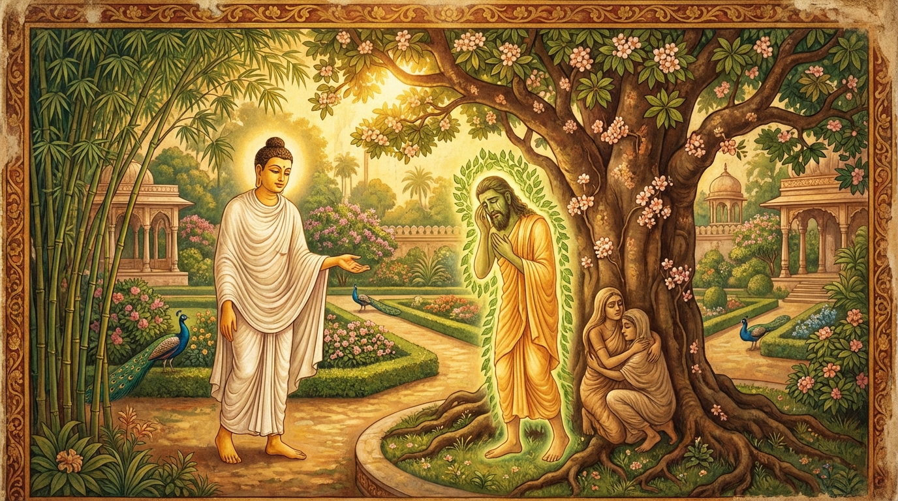

1. කුසනාළි ජාතකය (121)
“කරෙ සරික්ඛො” යනාදී වශයෙන් ආරම්භ වන මෙම ජාතක දේශනාව බුදුරජාණන් වහන්සේ ජේතවනාරාමයේ වැඩවාසය කරන සමයෙහි, අනේපිඬු සිටුතුමාගේ එක්තරා දිළිඳු මිතුරෙකු අරබයා දේශනා කරන ලද්දකි. අනේපිඬු සිටුතුමාගේ හිතවත් නෑදෑ මිතුරන් එක්ව, “සිටුතුමනි, මහා සිටුවරයෙක් වන ඔබ හා ජාතියෙන්, ගෝත්රයෙන් හෝ ධන ධාන්යයෙන් මොහු සමාන නොවේ, ඔබට වඩා උසස් ද නොවේ. එසේ තිබියදී ඔබ මොහු සමඟ කුමට මිත්ර සන්ථවයක් පවත්වන්නේද? එසේ නොකරන්න” යැයි පවසමින් නැවත නැවතත් සිටුතුමා වැළැක්වූහ. නමුත් අනේපිඬු සිටුතුමා, “මිත්ර සන්ථවය නම් තමාට වඩා හීන වූද, සමාන වූද, උසස් වූද අය සමඟ කළ යුතුය” යැයි පවසා ඔවුන්ගේ බස් නොගෙන, තමාට අයත් ගමකට යන විට ඒ දිළිඳු මිතුරා නිවසේ ආරක්ෂකයා ලෙස යොදවා ගියේය. මෙහි සියලු විස්තර කාලකණ්ණි ජාතක කථා පුවතෙහි සඳහන් පරිදි දත යුතුය. අනේපිඬු සිටුතුමා තමාගේ නිවසේ සිදුවූ මෙම පුවත බුදුරජාණන් වහන්සේට දැන්වූ කල්හි උන්වහන්සේ, “ගෘහපතිය, මිතුරෙකු තුළ කුඩා බවක් නොමැත. මිත්ර ධර්මය රැකීමට සමත් බවම ඒ සඳහා ප්රමාණවත් වේ. මිතුරා තමාට වඩා හීන වුවද, සමාන වුවද, උසස් වුවද ඇසුරු කළ යුතුය. ඒ සියලු මිතුරෝ තමා වෙත පැමිණි කාර්යභාරය මැනවින් ඉටු කරති. දැන් ඔබගේ ඒ දිළිඳු මිතුරා නිසා ඔබ ගෘහයේ ස්වාමියා බවට පත් විය. පෙර විසූවෝද දිළිඳු මිතුරෙකු නිසා දිව්ය විමානයක හිමිකරුවන් වූහ” යැයි වදාරා, සිටුතුමාගේ අයැදීම පරිදි අතීත කථාව ගෙනහැර දැක්වූහ.
අතීතයේ බරණැස් නුවර බ්රහ්මදත්ත රජු රාජ්ය කරන සමයෙහි බෝධිසත්ත්වයන් වහන්සේ රජුගේ උයනෙහි කුසතණ (කුසනාළි) පඳුරක දේවතාවෙක් වී උපන්හ. එම උයනෙහිම මංගල ශිලාව ඇසුරු කොට සෘජුව වැඩුණු කඳින් හා වටකුරු ශාඛා මණ්ඩලයකින් හෙබි, රජුගෙන් පවා පුද සත්කාර ලබන “රුච” නම් මංගල වෘක්ෂයක් (බුරුත හෝ තෙළඹු ගසක්) විය. එයට මුඛක වෘක්ෂය යැයිද කියනු ලැබේ. එහි මහත් ආනුභාව ඇති දෙවි රජෙක් වාසය කළේය. බෝධිසත්ත්වයන් වහන්සේට ඔහු සමඟ මිත්ර සන්ථවයක් ඇති විය. එකල රජතුමා එක් ටැම් මාළිගාවක වාසය කළේය. ඒ ටැඹ සෙලවෙන්නට විය. එවිට එහි සෙලවෙන බව රජතුමාට දැන්වූහ. රජතුමා වඩුවන් කැඳවා, “දරුවනි, මාගේ එක් ටැම් මංගල ප්රාසාදයේ ටැඹ සෙලවෙයි. සවිමත් අරටු ඇති ටැඹක් (ගසක්) ගෙනැවිත් එය නිසල කරව්” යැයි නියෝග කළේය. ඔවුහු “එසේය දේවයන් වහන්ස” යැයි රජුගේ බස පිළිගෙන, ඊට සුදුසු ගසක් සොයන්නාහු වෙනත් තැනක එබන්දක් නොදැක උයනට පිවිස, අර කී මංගල වෘක්ෂය දැක රජු වෙත ගොස් මෙසේ කීහ. “දරුවනි, ඊට සුදුසු ගසක් තොප විසින් දකින ලද්දේද?” යි රජු ඇසූ විට, “දේවයන් වහන්ස, දකින ලදි. එහෙත් එය කැපීමට අපි බිය වෙමු” යැයි පැවසූහ. “ඒ කුමක් හෙයින්ද?” යි ඇසූ විට, “අපි වෙනත් තැනක ගසක් නොදැක උයනට පිවිසියෙමු. එහිදීද මංගල වෘක්ෂය හැර වෙනත් ගසක් නොදුටුවෙමු. එබැවින් මෙය මංගල වෘක්ෂයක් නිසා එය කැපීමට නොහැක්කෙමු” යැයි කීහ. “යවු, ගොස් එය කපා ප්රාසාදය ස්ථිර කරව්. අපි වෙනත් මංගල වෘක්ෂයක් කරගන්නෙමු” යැයි රජු කීවේය. වඩුවෝ “යහපතැ” යි පිළිගෙන උයනට ගොස්, “හෙට දිනයේ ගස කපන්නෙමු” යි ගසට බලි පූජා පවත්වා පිටව ගියහ.
රුක් දෙවියා ඒ කරුණ දැන, “හෙට මාගේ විමානය විනාශ වී යනු ඇත. දරුවන් රැගෙන මා කොහි යම්ද?” යි යා යුතු තැනක් නොදැක, දරුවන් ගෙලෙහි එල්ලාගෙන හඬන්නට විය. ඔහුගේ හිතවත් වූ වන දේවතාවෝද පැමිණ, “මේ කිමෙක්දැ” යි විමසා කරුණ අසා, ඔවුහුද වඩුවන් වැළැක්වීමට උපායක් නොදැක හඬන්නට පටන් ගත්හ. එම අවස්ථාවේ බෝධිසත්ත්වයන් වහන්සේ, “රුක් දෙවියා බලන්නෙමි” යි සිතා එහි ගොස්, සිද්ධිය අසා, “කම් නැත, ශෝක නොකරන්න. මම වඩුවන්ට ගස කැපීමට ඉඩ නොදෙමි. හෙට වඩුවන් පැමිණි විට මා කරන දෙය බලාගන්න” යැයි පවසා ඒ දෙවිවරුන් සැනසූහ. පසුදින වඩුවන් පැමිණි වෙලාවෙහි බෝධිසත්ත්වයන් වහන්සේ කටුසු වෙස් ගෙන වඩුවන් ඉදිරියෙන්ම ගොස්, මංගල වෘක්ෂයේ මුල් අතරට රිංගා, ඒ ගස ඇතුළත කුහරයක් (බෙනයක්) ඇති පරිදි පෙන්වා, ගස මැදින් ඉහළට නැග කඳ මුදුනින් නික්ම හිස සොලවමින් සිටියහ. ප්රධාන වඩුවා ඒ කටුස්සා දැක, අතින් ගසට තට්ටු කර බලා, “මේ ගස ඇතුළත කුහර සහිත වූවකි, හරයක් නැති ගසකි. ඊයේ අපි විමසා නොබලාම බලි පූජා කළෙමු” යි ඒ ඝන වූ මහා වෘක්ෂයට නින්දා කොට පිටව ගියහ. මෙසේ රුක් දෙවියා බෝධිසත්ත්වයන් නිසා විමානයට හිමිකරු විය.

ඔහු ඇසුරු කළ බොහෝ දේවතාවෝ එහි තොරතුරු විමසීම සඳහා රැස්වූහ. රුක් දෙවියා “මාගේ විමානය මට ලැබුණේය” යි සතුටු සිත් ඇතිව ඒ දේව සමාගම මධ්යයෙහි බෝධිසත්ත්වයන්ගේ ගුණ කියමින්, “පින්වත් දෙවිවරුනි, අපි මහත් ආනුභාව ඇත්තෝ වුවද මඳ නුවණ ඇති බැවින් මෙම උපාය නොදත්තෙමු. නමුත් කුසනාළි දෙවියා (දිය බෙරලිය පඳුරෙහි දෙවියා) තමාගේ ඥාන සම්පත්තිය නිසා අපව නැවතත් විමාන හිමියන් කළේය. එබැවින් මිතුරන් ලෙස තමා හා සමාන අයද, තමාට වඩා උසස් අයද, හීන අයද ආශ්රය කළ යුතුය. ඒ සියල්ලෝම තමන්ගේ ශක්ති පමණින් යහළුවන්ට පැමිණි දුක දුරුකොට සැපයෙහි පිහිටුවන්නාහුමය” යි මිත්ර ධර්මය වර්ණනා කොට මෙම ගාථාව පැවසීය.
“ජාතිය ආදියෙන් තමාට සමාන වූද, උසස් වූද, එසේම හීන වූද අය සමඟ මිත්රත්වය ඇති කරගත යුතුය. ඔවුහු විපතේදී තමාට හැකි අයුරින් උසස්ම යහපතක් කර දෙති. බුරුත ගසෙහි උපන් මා සහ කුසනාළි පඳුරෙහි උපන් මිතුරා දෙස බැලීමෙන් ඒ බව වටහා ගත හැක.”
එහි අර්ථය මෙසේය: “කරෙ සරික්ඛො” යනු ජාති ආදියෙන් තමා හා සමාන අය සමඟ මිත්ර ධර්මය පවත්වන්නේය. “අථ වාපි සෙට්ඨො” යනු ජාති ආදියෙන් තමාට වඩා උසස් අය සමඟද මිත්රත්වය පවත්වන්නේය. “නිහීනකො වාපි කරෙය්ය එකො” යනු ජාති ආදියෙන් තමාට වඩා හීන වූ අයෙක් සමඟ වුවද මිත්ර ධර්මය පවත්වන්නේය. එබැවින් ඒ සියල්ලන්ම මිතුරන් කරගත යුතුය යන අර්ථයයි. ඒ මන්ද යත්? “කරෙය්යුමෙතෙ බ්යසනෙ උත්තමත්ථං” යනු ඒ සියල්ලෝම යහළුවාට විපතක් පැමිණි කල්හි තම තමන්ට හැකි පමණින් බර කරට ගෙන උසස්ම යහපතක් සිදු කරති; කායික හා මානසික දුක්වලින් ඒ යහළුවා මුදවා ගනිති යන අර්ථයයි. එබැවින් හීන වූවෙකු වුවද මිතුරෙකු කරගත යුතුය. අනෙක් දෙදෙනා ගැන කියනුම කවරේද? එහි උපමාව මෙසේය: “යථා අහං කුසනාළි රුචාය” යනු, “රුච” නම් මංගල වෘක්ෂයෙහි උපන් දේවතාවා වන මම වෙමි. මේ කුසනාළි පඳුරෙහි උපන් අල්පේශාක්ය දේවතාවාය. අපි මිත්ර සන්ථවය කළෙමු. එහිදී මම මහේශාක්ය වුවද මට පැමිණි දුක නුවණ මඳකම නිසාත්, උපායෙහි දක්ෂ නොවීම නිසාත් දුරු කරගැනීමට නොහැකි වීමි. නමුත් අල්පේශාක්ය වූවත් පණ්ඩිත වූ මේ දේවතාවා නිසා මම දුකින් මිදුනෙමි. එබැවින් දුකින් මිදෙනු කැමති අන් අය විසින්ද සම හෝ විශිෂ්ට භාවය නොසලකා, හීන වූවද නුවණැති අය මිතුරන් කරගත යුතුය.
රුච දේවතාවා මෙම ගාථාවෙන් දේව සමූහයාට ධර්මය දේශනා කොට, ආයු ඇති තාක් සිට, කුසනාළි දේවතාවා සමඟ කම් වූ පරිදි මියපරලොව ගියහ.
ශාස්තෘන් වහන්සේ මෙම ධර්ම දේශනාව ගෙනහැර දක්වා ජාතකය සමාධාන කළ සේක. “එකල රුච දේවතාවා වූයේ ආනන්ද තෙරණුවන්ය. කුසනාළි දේවතාවා වූයේ මම ම වෙමි.”
පළමු වන කුසනාළි ජාතක වර්ණනාව නිමාවිය.